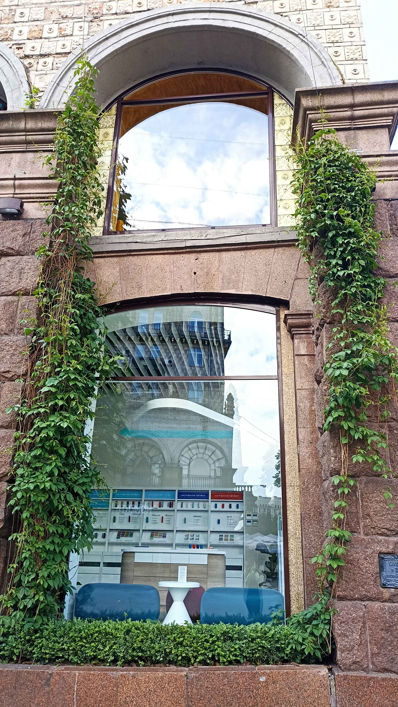
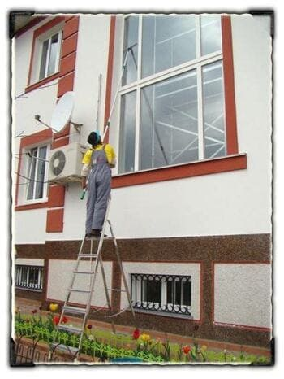

Наші послуги з миття вікон

🪟 Миття вікон з одного боку
Ідеально підходить для підтримки чистоти у вашому офісі або квартирі. Використовуємо лише безпечні засоби — бездоганно чисті вікна без розводів.
- ✅ Миття скла та рами без пошкодження
- ✅ Без розводів — гарантія
- ✅ Еко-засоби, безпечні для здоров'я
- ✅ Працюємо по всьому Києву
🌐 Замовити онлайн

🪟 Миття вікон з двох сторін
Комплексна послуга — ретельне очищення стекол і рам з обох боків. Професіонали з багаторічним досвідом та екологічно чисті засоби.
- ✅ Безпечні перевірені засоби
- ✅ Професіонали зі стажем
- ✅ Вигідні конкурентні ціни
- ✅ Київ, Шевченківський район, Носівка
🌐 Замовити онлайн

🏢 Миття балконів та фасадів
Професійна мийка балконів, лоджій та фасадів до 5 м висоти, включаючи важкодоступні зони. Спеціальне обладнання для бездоганних результатів.
- ✅ Виведення бруду та пилу
- ✅ Спеціальні щітки та техніка
- ✅ Замовлення на день у день
- ✅ Київ, Носівка, Шевченківський район
🌐 Замовити онлайн